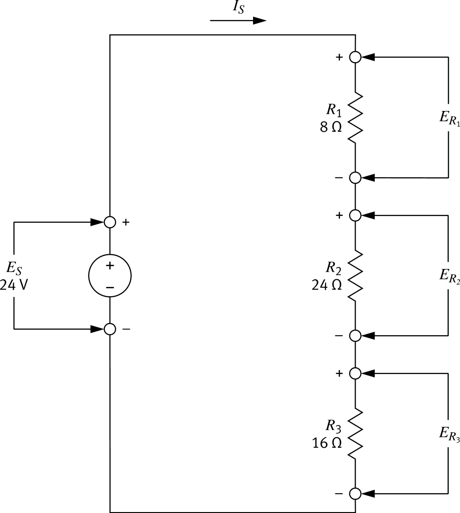
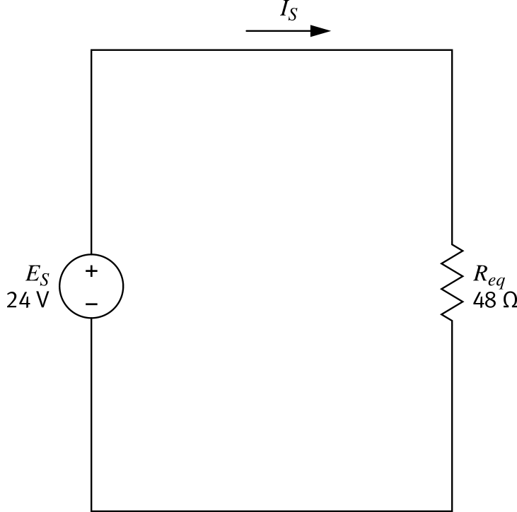

Three-Resistor Series Circuit


-
Given
ES = 24 V , R1 = 8 Ω , R2 = 24 Ω , R3 = 16 Ω -
Step 1 — Find Req
Req = R1 + R2 + R3 = 8 + 24 + 16 = 48 Ω -
Step 2 — Find IS
 IS = VReq IS = 24 V48 Ω = 0.50 A
IS = VReq IS = 24 V48 Ω = 0.50 A -
Step 3 — Voltage across each R
ER = IS × R ER1 = 0.50 × 8 = 4.00 V ER2 = 0.50 × 24 = 12.0 V ER3 = 0.50 × 16 = 8.00 V